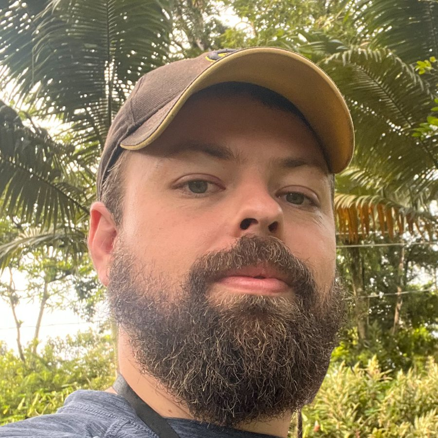
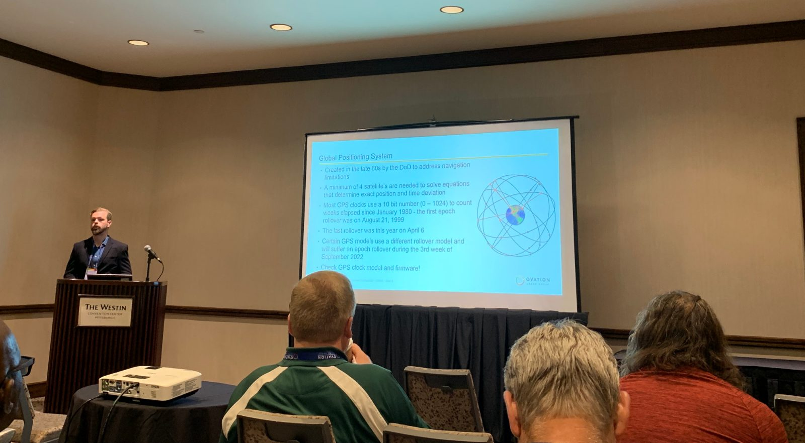

01
SCADA System Integration, Architecture & Maintenance
System migration, upgrades, screen creation, loop checks, fault-tolerant design, redundancy strategy, FAT/SAT, commissioning and ongoing maintenance.
Alexander Kuesel Montealegre
10+ years helping keep critical industrial control systems running and moving them forward: Ovation, FactoryTalk and Ignition; migrations, virtualization, FAT/SAT and on-site commissioning at power stations across the Americas. More recently at Intel, supplementing existing manufacturing facility SCADA systems with first of a kind robotics, computer vision and AI inference for autonomous operation.

01
System migration, upgrades, screen creation, loop checks, fault-tolerant design, redundancy strategy, FAT/SAT, commissioning and ongoing maintenance.
02
Driver development, IoT embedded device coding and configuration, Low-level sensor integration. Website development, API integrations, time-series database design and implementation.
03
Connecting disparate proprietary systems, getting data out of old systems and leveraging modern protocols for true connectivity. Connecting plant historians to data lakes, cloud storage and online data streaming highways. Contextualizing tag data by relating it to asset identifiers, opening up optimization possibilities across entire fleets.
04
Autonomous inspection rounds, image and metadata ingestion at fleet scale, and associated validation pipelines. Real world experience implementing computer vision at an industrial scale and how to circumvent limitations. Exposing plant data to downstream systems including AI agents, fine-tuned ML algorithms and optimization schemes.
05
Requirement gathering, RFI/RFP, structured evaluation, proof-of-concept design, new product introduction and technical support through contracting and negotiation.
06
Building and leading engineering teams across the industry, including technical writing for bulletins, internal documentation, conference talks and workshops.
Work done as an employee of the organisations named. Details are limited to what is public.
Intel · Product Owner
As product owner of Intel's proprietary internal SCADA platform, was the primary point of contact for all issues and improvement requests. Architected, planned and led a massive revamp of the platform that included new front-end technology, an entirely new database structure and accompanying APIs and connections.
Intel · Architect
Architected and coded a first of kind platform that brings images and metadata off Boston Dynamics SPOT robots doing autonomous rounds and readings in manufacturing facilities, runs through inference engines and then injects into the SCADA platform to correlate with hard-wired signals. This also included designing and implementing a CI/CD process that included ML engineers accessing images to fine-tune models, accuracy validation and long-term storage.
Intel · Product Owner
Led a multi-month, cross business-unit process to select a third party SCADA Historian now used across Intel facilities. This included kicking off the project, requirements gathering, meeting with vendors, cross BU communication and implementation.
Emerson · NV Energy
Led the first of kind project to fully virtualize Ovation for NV Energy power plants, starting at Tracy Generating Station. This involved multiple visits to site and local offices for FAT/SAT and cutover.
Emerson · Copper Mountain Solar
Implemented a reactive power mitigation control scheme on site at one of the largest solar generating facilities in the United States.
Emerson · Technical Content Champion
Founded and was primary content creator and editor for technical bulletins sent to 1000+ field service and technical sales engineers worldwide.
Representing Intel at the Node-RED conference to walk through how our team used Node-RED across PLC, IoT and robotics integration work in real manufacturing facilities.

Represented Emerson Power & Water Solutions, presenting on controller hardware to Southern Company's engineering organisation.
Demystifying NTP, stratums, epoch overflow and associated factors in critical DCS
Presented to 30+ customers at the regional technology fair.
2025
Software Engineering Manager, Industrial Automation & Robotics
A team of 8 across PLC, IoT and robotics
2022–2025
Industrial Automation & Robotics Product Owner
SCADA platform used by 5,000+ operators and technicians
2019–2022
Senior Distributed Control System Consultant
Technical lead for 35+ engineers
2014–2019
Distributed Control System Team Lead
A team of 8, commissioning across the Americas
M.Sc. Mechanical Engineering — Energy Management
B.A. Electromechanical Engineering
ISA Senior Member
CFIA Active Member
Certified Vibration Analyst, Category 1
Matrikon OPC Systems Integrator
Wilderness First Responder (AIDER)
Part of the management team, applying syntropic agriculture methods to a farm on the Costa Rican Pacific coast. I also built the real-time monitoring that publishes the farm's metering data publicly, and coded the site it runs on: live metering →
Communications and website development for the collective, and engineering consulting on its projects.
Wilderness survival and orienteering instructor. Also climbing and adventure instructor, belay certified.
Ham radio, Meshtastic and The Things Network. Much the same stack I work with professionally, running off-grid and on my own time.
Amateur ecology: animal tracking and mapping the corridors wildlife uses to move between habitats. Field data collection that ends up looking a lot like a sensor network.
Wilderness First Responder training with AIDER — the medical and search and rescue side of spending time in the backcountry.
Reach out if you require help on any SCADA projects, software development or robotics integration.